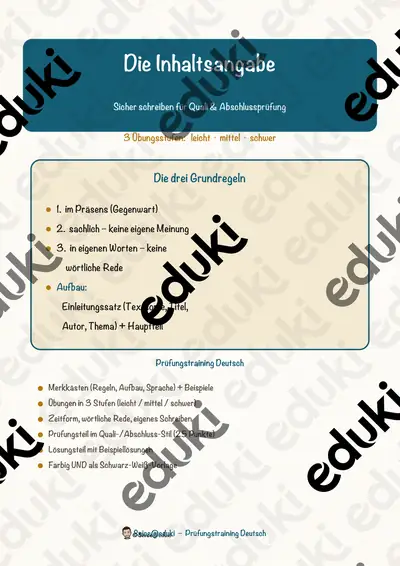

Inhaltsangabe und Textarten: Arbeitsblätter für Klasse 6–10 (Deutsch)
Textarten erkennen und Inhalte wiedergeben sind Kernkompetenzen im Deutschunterricht der Sekundarstufe. Dazu zählen Kurzgeschichte, Bericht, Brief und Zusammenfassung.
Im Unterricht begegnen den Lernenden zuerst Kurzgeschichte und Inhaltsangabe. Wer weitergeht, behandelt Erzählung, Bildgeschichte, Brief und E-Mail sowie Textsorten.
Im Fach Deutsch gehört das Thema nach den Lehrplänen der Länder zum festen Programm, überwiegend in der Sekundarstufe I (Klasse 6–10). Die Schülerinnen und Schüler unterscheiden Textarten und fassen Inhalte knapp zusammen.
Eine Reihe zu Inhaltsangabe und Textarten lässt sich so gliedern: erst Kurzgeschichte erarbeiten, dann Inhaltsangabe anwenden, später Bildgeschichte und Brief und E-Mail vertiefen. Zu jedem Material gehört eine Musterlösung, die Korrektur und Selbstkontrolle erleichtert. Zur Differenzierung eignen sich die Lesespurgeschichten mit ihren drei Niveaustufen.
Zum Thema finden Sie 12 Materialien, unter anderem Bewerbungsfoto, Mappe & E-Mail-Bewerbung, Merkmale einer Kurzgeschichte und Der Leserbrief, verteilt auf 4 Lesespurgeschichten, 2 Prüfungstrainings und 3 Lückentexte mit Hörverstehen in Klasse 5–10. Eine Kurzgeschichte in fünf Sätzen zu erzählen schult das Wesentliche besser als lange Aufsätze.
Das gehört zum Thema
Passende Arbeitsblätter und Materialpakete

Merkmale einer Kurzgeschichte – Lesespurgeschichte mit Rätselaufgaben (Klasse 7)

Der Leserbrief – meine Meinung in der Zeitung – Lesespurgeschichte mit Rätselaufgaben (Klasse 8)

E-Mails und Netiquette – höflich und sicher schreiben – Lesespurgeschichte mit Rätselaufgaben (Klasse 5)

Comic und Bildgeschichte – Erzählen in Bildern – Lesespurgeschichte mit Rätselaufgaben (Klasse 6)

Die Kurzgeschichte – Prüfungstraining Deutsch (Klasse 9)

Die Inhaltsangabe – Prüfungstraining Deutsch (Klasse 8)

Erzählung Lückentext mit Wortspeicher Hörverstehen und Suchsel

Brief Lückentext mit Wortspeicher Hörverstehen und Suchsel

E-Mail Lückentext mit Wortspeicher Hörverstehen und Suchsel

Bewerbungsfoto, Mappe & E-Mail-Bewerbung – Bewerbung & Praktikum, 3 Stufen, mit Hilfen & Lösungen (Klasse 7–10)

Kunst Comic Onepager (auch Vertretung)

Comic und Emotionen, Adjektive
Häufige Fragen
Für welche Klassenstufe passen die Arbeitsblätter zu Inhaltsangabe und Textarten?
Passend sind Klasse 5–10. Von den 12 Titeln wenden sich die meisten an Klasse 5, einige lassen sich differenzierend auch in benachbarten Stufen nutzen.
Welche Inhalte decken die Materialien zu Inhaltsangabe und Textarten ab?
Die Materialien arbeiten an Kurzgeschichte, Inhaltsangabe und Erzählung und gehen dann weiter zu Bildgeschichte, Brief und E-Mail und Textsorten. Vorab lohnt ein Blick in den Lehrplan des eigenen Bundeslandes.
Wie setze ich Inhaltsangabe und Textarten im Unterricht ein?
Eine Kurzgeschichte in fünf Sätzen zu erzählen schult das Wesentliche besser als lange Aufsätze. Danach genügt meist ein Material als Einstieg und eines zum Üben.
Mehr Material nach Fach und Klasse
- Alle Materialien Deutsch
- Arbeitsblätter Deutsch Klasse 6
- Arbeitsblätter Deutsch Klasse 7
- Arbeitsblätter Deutsch Klasse 8
- Arbeitsblätter Deutsch Klasse 9
- Arbeitsblätter Deutsch Klasse 10
- Unterrichtsmaterial Klasse 6
- Unterrichtsmaterial Klasse 7
- Unterrichtsmaterial Klasse 8
- Unterrichtsmaterial Klasse 9
- Unterrichtsmaterial Klasse 10
Verwandte Lehrplanthemen
- Literatur: Kurzgeschichte, Roman und Jugendbuch (Deutsch, Klasse 7–10)
- Bewerbung und Praktikum (Deutsch, Klasse 8–10)
- Vorgangsbeschreibung (Deutsch, Klasse 5–8)
- Wortarten (Deutsch, Klasse 2–7)
- Gedichte und Balladen (Deutsch, Klasse 3–10)